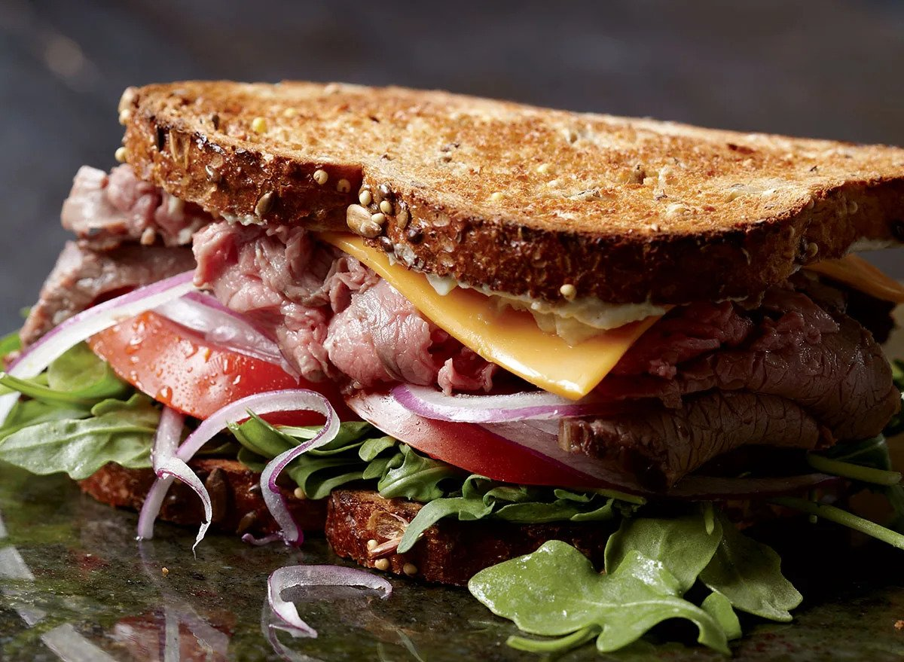

If you're anything like me, you feel tired and distracted at work in
the afternoon. The problem is you're hungry and running out of steam.
A hearty roast beef sandwich is perfect for giving you the energy you
need to get through the day.
Ingredients
- 2 Tbsp olive oil mayonnaise
- 2 Tbsp Greek yogurt
- 2 Tbsp prepared horseradish
- 1 Tbsp Dijon mustard
- 1 clove garlic, finely minced
- 2 cups arugula
- 8 slices multi grain bread, lightly toasted
- 1 large tomato, sliced
- 1⁄2 red onion, very thinly sliced
- 1 lb leftover garlic-rosemary roast beef, thinly
sliced, or high-quality store-bought roast beef
- 4 slices sharp Cheddar
Instructions
- Combine the mayo, yogurt, horseradish, Dijon, and
garlic in a mixing bowl.
- Divide the arugula among 4 pieces of bread.
- Top with the tomato slices (seasoned with a pinch
of salt), onion slices, roast beef, and Cheddar.
- Spread the top pieces of bread with a thick layer
of the horseradish mayo and complete the sandwiches.
- Most importantly, ENJOY